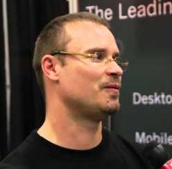
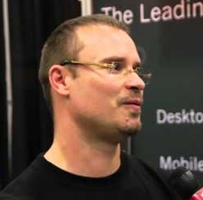

Mirage OS
 The cloud has so far mostly been used to consolidate existing operating systems
and manage them more conveniently. The interface between guest kernels,
applications and VMs are all managed very differently, leading to serious
inefficiencies, unreliability and insecurity. Mirage
OS revisits the library OS concept (built here as
Nemesis
in the late '90s), and narrows the gap between safe, high-level programming,
and low-level systems construction.
The cloud has so far mostly been used to consolidate existing operating systems
and manage them more conveniently. The interface between guest kernels,
applications and VMs are all managed very differently, leading to serious
inefficiencies, unreliability and insecurity. Mirage
OS revisits the library OS concept (built here as
Nemesis
in the late '90s), and narrows the gap between safe, high-level programming,
and low-level systems construction.
Applications are written in high-level OCaml and compiled directly into
microkernels that run on the Xen hypervisor. By treating the hypervisor as a
stable hardware platform, we can focus on high-performance protocol
implementations without worrying about having to support the thousands of
device drivers found in a traditional OS. Although Mirage initially targets
the Xen hypervisor, other backends, such as a FreeBSD kernel module and
Javascript, also exist.
Mirage includes clean-slate functional implementations of protocols ranging
from TCP/IP, DNS, SSH, Openflow (switch/controller), HTTP, XMPP and Xen
inter-VM transports. Some of the new applications we're building using Mirage
include the next-generation Xen Cloud
Platform (a widely deployed
open-source Xen distribution), dubbed Project
Windsor.
Team


 


Tasks
Unikernel Mirage prototype
Complete by Anil Madhavapeddy (Aug 2012 - Mar 2013)
ASPLOS 2013 HotCloud 2010
The first Mirage prototype was initially described in the HotCloud 2011 paper, and then
built and evaluated in the ASPLOS 2013 paper. During the
course of the work, we separated our thinking into the general concept of
unikernels (which are specialised, sealed tasks that can be compiled very
portably), and the OCaml-based Mirage prototype that comprehensively
implemented the solution.
This task resulted in a solid prototype for the evaluation in the paper, but
further cleanup and documentation is still required to release a public
version. This continues as part of the Xen.org incubation task.
Xen.org incubation
Complete by Amir Chaudhry (Dec 2012 - May 2013)
Proposal Xen.org Mirage Page
The Mirage project is being incubated as an official
xen.org project. This will give us a neutral
community ground to continue long-term development of the libraries
and tools required to turn it into a robust, production-grade
exokernel.
To date we have:
The next stage is to continue working with
Lars on the new xen.org
properties and public announcements.
In addition, Xen.org has become a Linux Foundation Collaborative Project and
MirageOS was prominently mentioned in the
press release!
Mirari
Complete by Vincent Bernardoff (Feb 2013 - Jun 2013)
Github Blog
Mirari takes a single configuration file and splits the lifecycle of a
Mirage application into three distinct segments:
configuration: it scans the config file, checks for any missing OPAM
dependencies, and installs them if missing. It also looks for any
filesystem directives and calls mir-crunch to generate the static ML
files. All of this is then glued together into an autogenerated
main.ml which is the entry point for the application.
build: it runs the OCaml build (via Vincent's obuild), and then
issues any backend-specific commands (such as the specific link
script for the Xen backend, or whatever else we dream up). For
convenience, a symlink pointing to the compiled binary will be
created in the current working directory.
run: this is being implemented. Running a Mirage application is
quite stateful: in the case of Xen, we want to monitor the kernel,
attach a console, and so on. Similarly for UNIX, one can imagine
the socket version opening up a control channel for Mirari to pass
additionnal configuration directives, such as network interfaces.
An in the kFreeBSD backend, this would be done via ioctls or other
kernel/user interfaces.
Mirage Developer Preview
Complete by Dave Scott (Feb 2013 - Jul 2013)
Github Meeting Minutes
The Mirage developer preview aims to be a stable release of the Mirage tools
and libraries in OPAM, and a simple (tested) "Getting started guide" on the
wiki.
The three target applications are to build and run:
- a self-hosting website and DNS server (without SSL)
- stub-domains for xenstore and xenconsoled, demonstrating how mirage can be used to build critical infrastructure.
- simple distributed system using multiple communicating Mirage instances
Mirage 1.0
Complete by Anil Madhavapeddy (Aug 2013 - Nov 2013)
Github Announcement Homepage
The first release of Mirage 1.0 has the goal of self-hosting infrastructure running on Xen (ideally on Amazon EC2 or Rackspace), and a set of tools to make it easy to extend the system with new backends and device drivers. See the announcement blog post for more.
kFreeBSD
In Progress by Gabor Pali (Jun 2013 - Sep 2013)